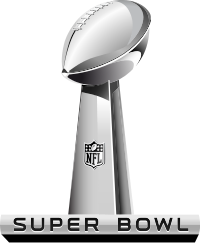

David McDonald
David McDonald


Navigation
Welcome!
Welcome to WikiProject United States on the English Wikipedia! We are a project dedicated to improving Wikipedia's coverage of topics related to the United States, with an emphasis on subjects with regional and national significance. This project was formed to coordinate the development of United States related articles and help maintain the United States Portal. This project also provides a place for Wikipedians to share information and resources regarding improvements to United States related articles. For more information of the role of WikiProjects, check out WikiProject guidelines. Get Started- Create a login and password. Login to your account and write a little bit about yourself.
- Find articles to edit by going to the tab marked with “All Tasks” and choose an article to edit. You can also look for a topic or article through the Search bar.
- Once you find the section of the article you want to edit in the article click the “Edit” button.
- You will now be in a live editor where you can see other people making changes to the article in real-time. You can input text, links, media, add citations, and your user name as a signature.
- Check off the task as complete and find a new one.
- Earn points for each “good” edit you make and unlock privileges.
- If you need help direct your questions to an experienced user through the personal messaging system or post questions and make proposals under the “Forum” tab.
Recommended
 Red Delicious Apples
Red Delicious Apples
Featured Article
 The Super BowlAnnouncements
Help Out!
Please help out newcomers! Use your manners and help point them in the right direction if you are contacted by a new WikiProjects member.Collaborate.
Don't forget to try out the new live collaborative features. Many minds make quick work, so don't be afraid to add additional information to an article that is already being edited. Also, we'd love to hear your feedback on the new WYSIWYG (What You See Is What You Get) editing tools.Photos Needed.
We are in need of photos for all articles relating to native american clothing, particularly footwear. Please add any appropriate photos that you may have on hand. Thanks!
Notifications
- 3 Chat
- 7 Edits
- 1 News